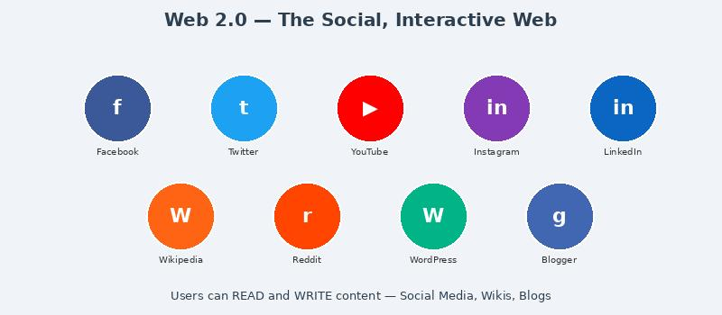

What is Web 2.0?

Web 2.0 describes the second generation of the web, starting around 2004, where websites became interactive and user-driven. It's often called the "read-write" web.
Instead of just consuming content, users could now create, share, and collaborate online.
Key features:
- User-generated content (comments, reviews, posts)
- Social media platforms (Facebook, Twitter, YouTube)
- AJAX technology enabled dynamic, responsive pages
- Wikis, blogs, and tagging systems
- Examples: Wikipedia, YouTube, Facebook, Instagram, Reddit